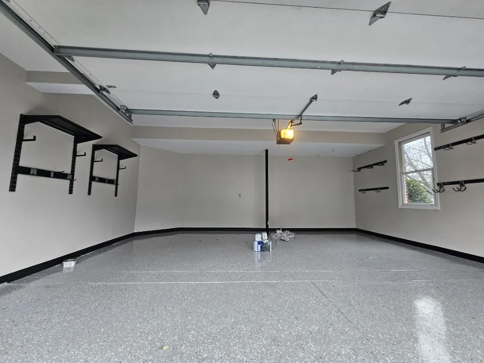

Garage & basement coatings · Montgomery County
Concrete floor coatings that make utility spaces feel finished.
Durable-looking, easy-to-maintain floor coating systems for garages, basements and select commercial spaces.
 Real Cascade project
Real Cascade projectHow we approach it
Good finish work starts long before the final coat.
A floor coating changes more than the color of concrete. It changes how the entire garage or basement feels. The surface has to be evaluated, cleaned and prepared so the finish can bond and perform as intended.
Garage floor coatings
Basement concrete coatings
Surface cleaning and preparation
Wall and trim painting for complete space refreshes
Select commercial floor coating projects
Real Cascade work
See the finish in real spaces.


Scope before price
What shapes the project.
A useful estimate is tied to the actual condition of the surfaces and how the space has to function while the work is underway.
Frequently asked
Details before you decide.
Can you coat an older concrete floor?
Often, yes. The condition of the concrete, existing coatings, moisture and surface contamination all affect whether and how the floor should be coated.
Do you also paint garage walls and ceilings?
Yes. Garage projects can include walls, ceilings, trim and related finish work along with the floor.
How long before the floor can be used?
Return-to-service time depends on the coating system and site conditions. We provide the product-specific timing with the project plan.
Do you coat basement floors?
Yes. Basement concrete can be evaluated for coating as long as the surface conditions are suitable.
Ready to talk through your project?
Share the basics and we will help you define the next step.
Request an Estimate ↗